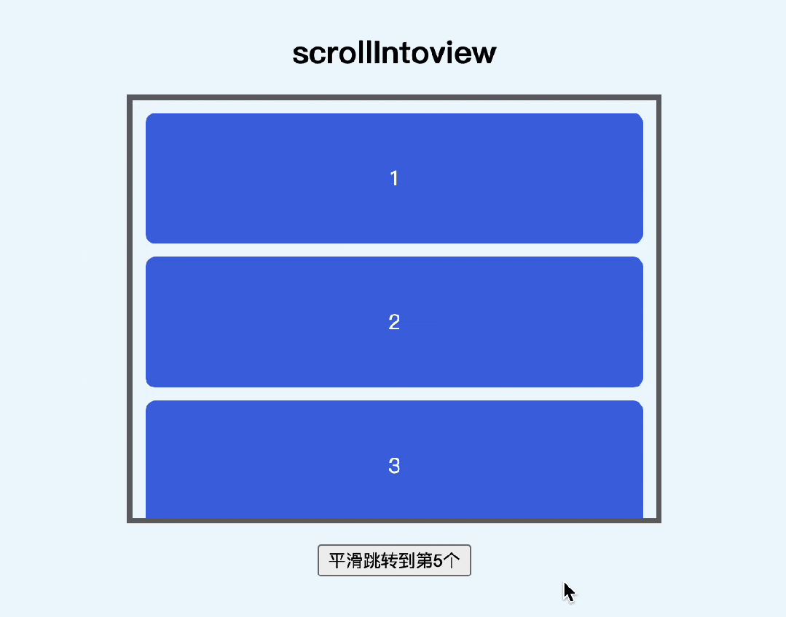
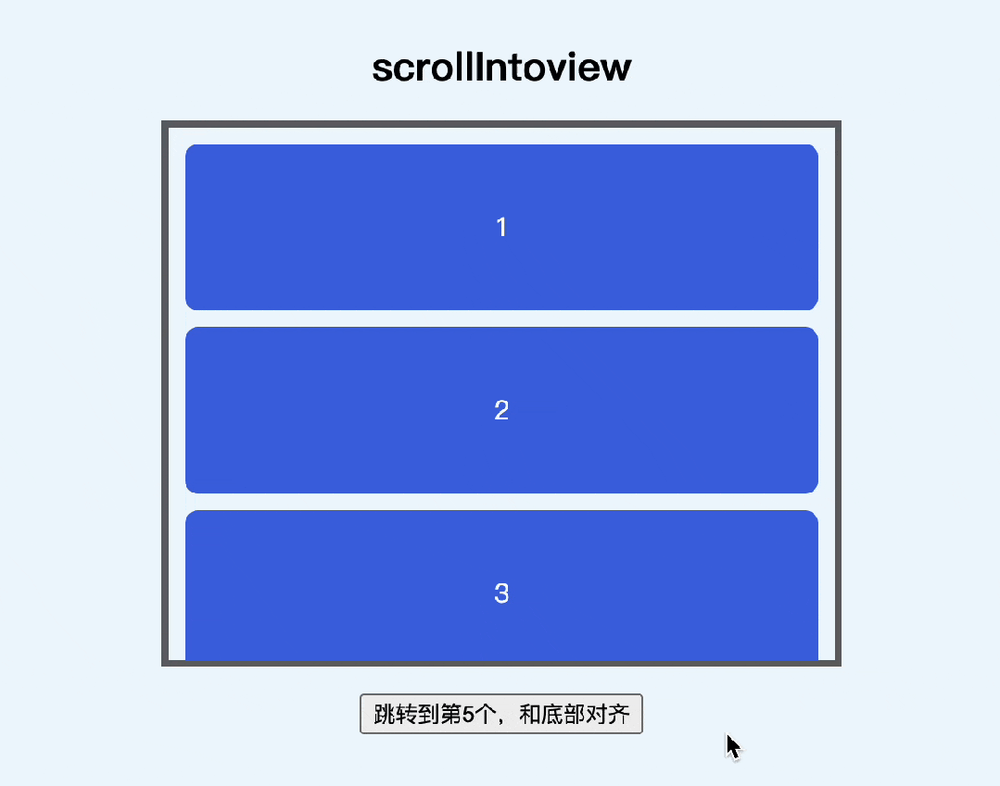
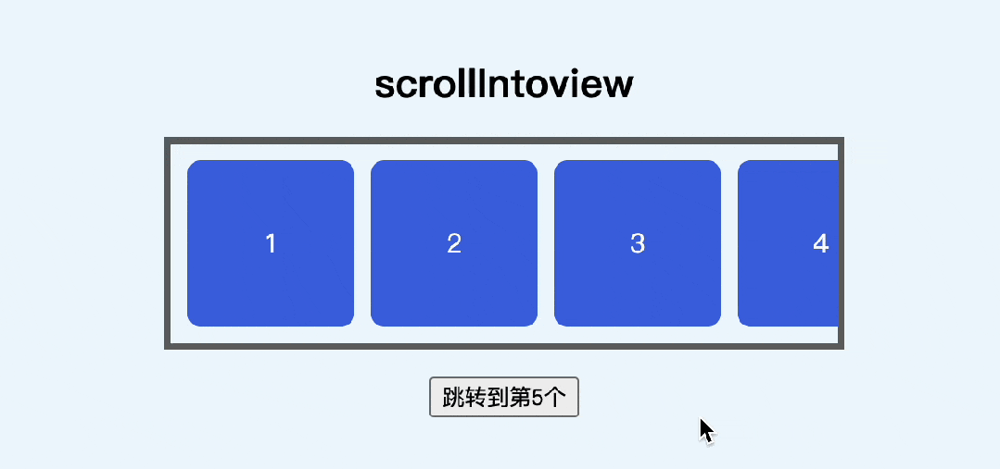
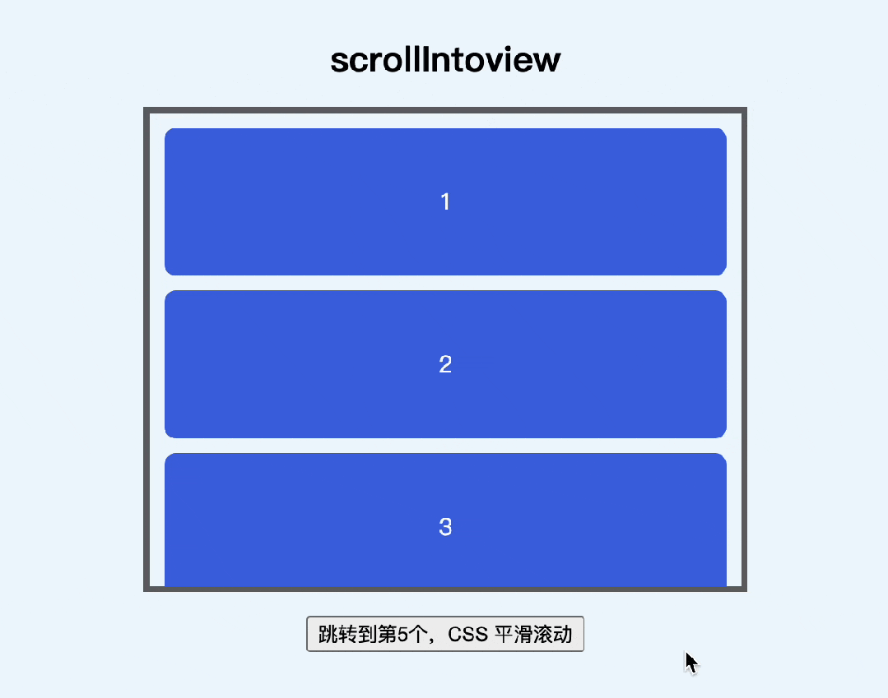
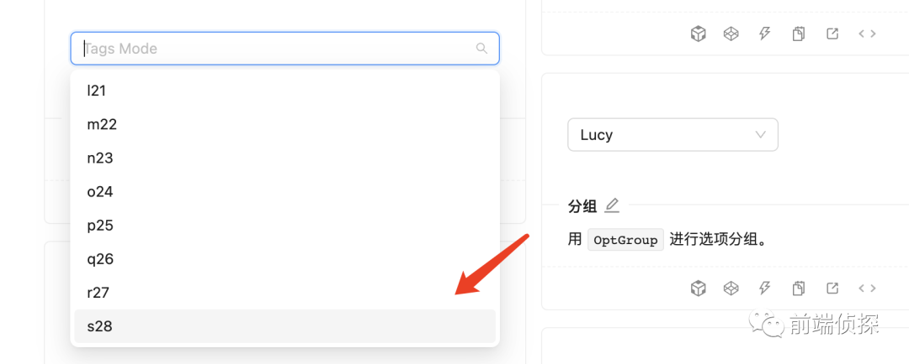
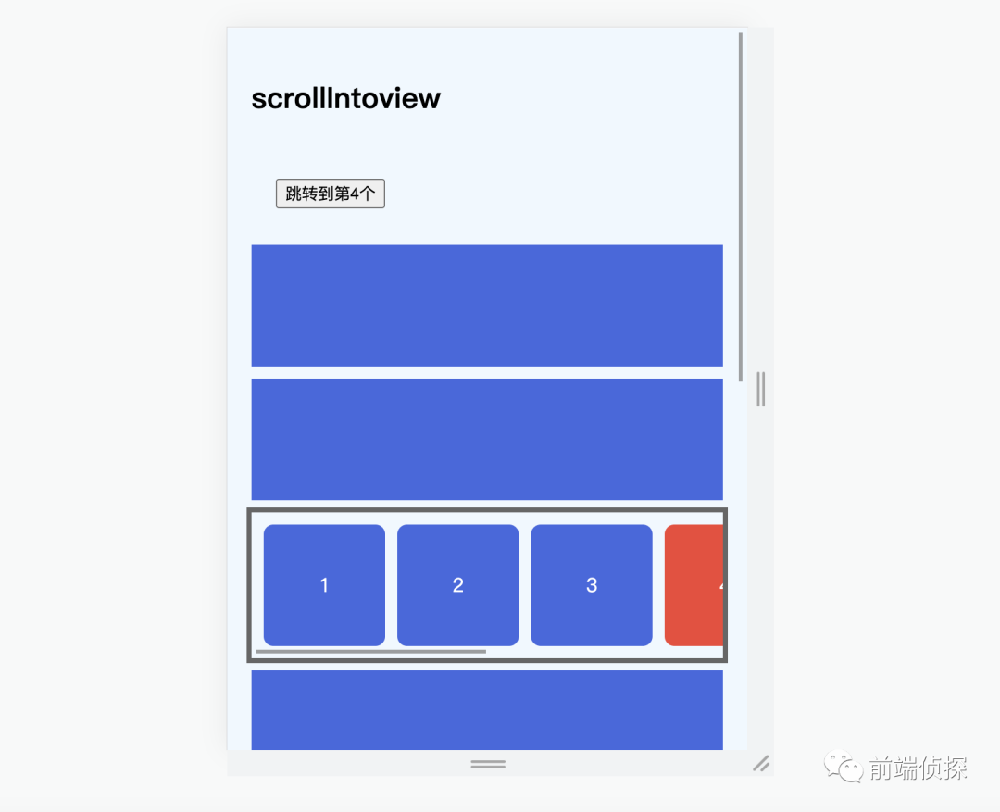
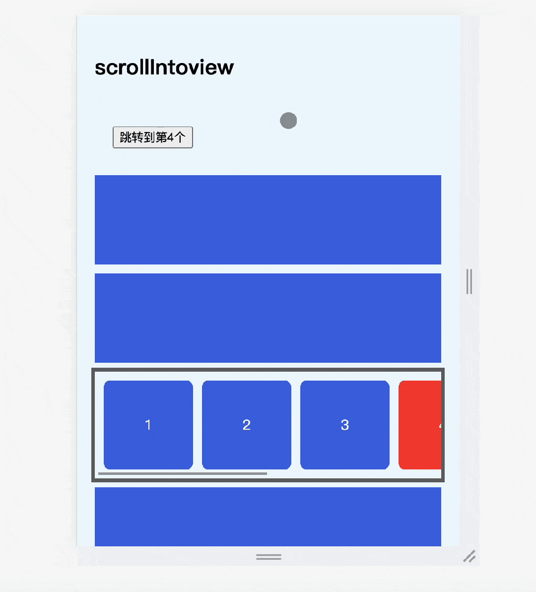
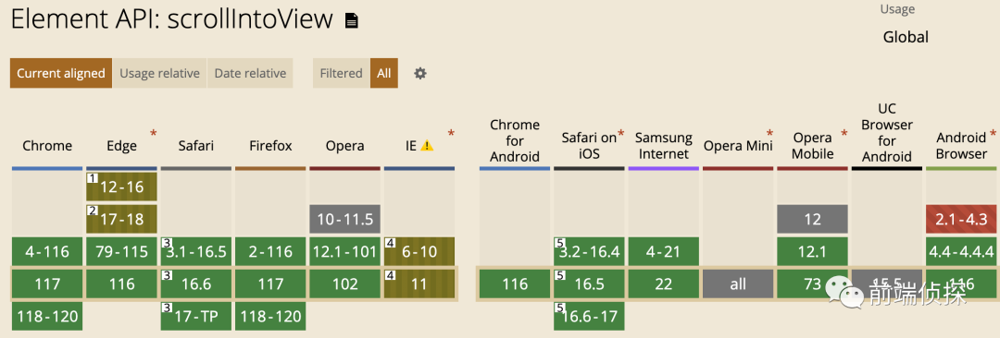

scrollIntoview
2024-06-08 14:10:57 · YinHao
大家可能都知道 dom 有一个 scrollIntoview方法，它可以轻易的让目标元素滚动到可视范围之内，而无需手动计算偏移量
dom.scrollIntoview();
效果如下

这样跳转比较生硬，因此可能还知道有这样一个参数
dom.scrollIntoview({
behavior: "smooth",
});
这样就能平滑滚动了

仅仅只有这些了吗？其实还可以做很多
一、重新学习 scrollIntoView 语法
打开 MDN 官网
https://developer.mozilla.org/zh-CN/docs/Web/API/Element/scrollIntoView
语法其实很简单，有三种形式
scrollIntoView();
scrollIntoView(alignToTop);
scrollIntoView(scrollIntoViewOptions);
首先看第 2 种形式，就一个参数 「alignToTop」 布尔值
默认为 true，表示是否沿着元素的顶端和滚动容器对齐，否则和元素底端对齐。
dom.scrollIntoView();
dom.scrollIntoView(true);
这两种效果是相同的

如果设置为false，那么会居底部对齐
dom.scrollIntoview(false);
效果如下

注意，「alignToTop」 自适应于 「垂直方向」 上的滚动，如果是 「水平方向」 的滚动，设置了没有任何区别。
// 水平滚动下，以下 3 种写法作用相同
dom.scrollIntoview();
dom.scrollIntoview(true);
dom.scrollIntoview(false);
效果都是一样的，如下

🤔 为啥是居右侧对齐呢？同时为了满足两个方向上的灵活控制，出现了 「scrollIntoViewOptions」 参数。
这个稍微复杂一点，接着往下看。
二、详解 scrollIntoViewOptions 参数
「scrollIntoViewOptions」 是一个对象，包含 3 个属性，分别是 「behavior」、「block」、「inline」
dom.scrollIntoView({
behavior: "smooth",
block: "end",
inline: "nearest",
});
首先来看 「behavior」 属性，这是用来定义滚动动画的，有 3 个关键词
- 「smooth」：平滑滚动
- 「instant」：无动画，直接跳转
- 「auto」：默认值，滚动行为由 scroll-behavior[1] 的计算值决定
默认情况下是 「auto」，也就是由 CSS scroll-behavior 属性决定，如果我们给滚动容器添加了这个属性
.list {
scroll-behavior: smooth;
}
这样，在不传递任何参数的情况下，也能实现平滑滚动
dom.scrollIntoView();
效果如下

一般情况下推荐使用 CSS 方式。
至于 「instant」，实测和 「auto」 效果一致，如果设置了 CSS 平滑滚动，即使设置了scroll-behavior: instant仍然是平滑滚动，并不是我想象中的直接跳转 ❓。

接下来看第 2 个属性 「block」，这是用来定义 「垂直方向」 上的对齐方式，有 4 个关键词
- 「start」：「默认值」。元素顶部和滚动容器顶部对齐
- 「center」：元素和滚动容器居中对齐
- 「end」：元素底部和滚动容器底部对齐
- 「nearest」：如果已经在视野范围内，就不滚动，否则就滚动到顶部或者底部（哪个更靠近就滚到哪里）
其中，「start」 和 「end」 分别是顶部对齐和底部对齐，效果等同于
// 以下写法
dom.scrollIntoView({
block: "start",
});
dom.scrollIntoView({
block: "end",
});
// 等同于
dom.scrollIntoView(true);
dom.scrollIntoView(false);
前面已经演示过了，这里就不重复了
「center」 是一个比较实用的属性，可以让元素一直处于中间位置，非常适合上一个、下一个切换的场景
dom.scrollIntoView({
block: "center",
});
这里简单实现了一个上下切换的效果

「nearest」 表示邻近的，可能稍微复杂一点，会根据元素 是否已经在可视范围内 做判断，避免频繁滚动，下面是一个原理演示

dom.scrollIntoView({
block: "nearest",
});
实际效果如下

如果用这个来实现上一个、下一个的功能，体验可能会更好

非常适合下拉列表中的上下键盘操作（截图为 Ant Design Select 组件）

还有个 「inline」 属性，和 「block」 是一致的，只是用来定义 「水平方向」 上的对齐方式，也有 4 个关键词
- 「start」：元素左侧和滚动容器左侧对齐
- 「center」：元素和滚动容器居中对齐
- 「end」：元素右侧和滚动容器右侧对齐
- 「nearest」：「默认值」。如果已经在视野范围内，就不滚动，否则就滚动到左边或者右边（哪个更靠近就滚到哪里）
作用效果和前面完全是一致的，这里就不一一演示了。
有没有发现？「block」 和 「inline」 的默认值是不一样的，这也是为什么在水平滚动下，scrollIntoView(true)和scrollIntoView(false)效果完全一致了，就是因为水平方向上已经在可视区了，所以不会有任何滚动。
三、水平和垂直同时存在的情况
很多时候，页面可能会存在水平和垂直都有滚动的情况，例如下面这种

整个页面是可以上下滚动的，然后页面中包含一个可以横向滚动的区域。
如果这时想要将红色部分滚动到可视区中间，应该怎么做？
按照前面的参数，可能会想到这样
dom.scrollIntoView({
inline: "center",
});
效果是这样的…

可以看到，水平方向确实滚动到了中间，但是垂直方向上滚动到了最顶部。
这是因为垂直方向的默认值为start，所以为了产生避免这样的影响，可以这样
dom.scrollIntoView({
block: "neareast",
inline: "center",
});
这样就不会上下跳动了

四、scrollIntoView 的边距
大家发现没，在使用start、end这些属性值的时候，元素滚动到视野范围之内都是紧靠边缘的

视觉上有点不好看，有没有办法预留一点空间呢？
当然有了，不过不是 「scrollIntoView」 本身，而是需要借助 CSS 中的 「scroll-margin」 属性。关于这个特性，之前在这篇文章有有详细介绍，有兴趣的可以回顾一下
因此在这里，要留点间距也很简单，只需要
.item {
scroll-margin: 10px;
}
再看看前面的上一个、下一个效果

是不是舒服了很多？
五、scrollIntoViewIfNeeded
除了 「scrollIntoView」，还有个非标准的 「scrollIntoViewIfNeeded」，-webkit-支持
https://developer.mozilla.org/zh-CN/docs/Web/API/Element/scrollIntoViewIfNeeded
顾名思义，就是只有需要滚动定位的时候才会滚动，和neareast功能有点像
这个方法可以传递一个布尔值
element.scrollIntoViewIfNeeded(); // 等同于 element.scrollIntoViewIfNeeded(true)
element.scrollIntoViewIfNeeded(true);
element.scrollIntoViewIfNeeded(false);
表示在滚动到视线范围之内时是否 「居中对齐」。
这是和scrollIntoView不太一样的地方，相当于同时满足了neareast和center的功能，非常适合用在需要初始化滚动的场景，比如这种滚动定位的任务进度条

下面用一个简单案例模拟一下

完整 demo 可以参考以下链接
- scrollIntoViewIfNeed (juejin.cn)[2]
- scrollIntoViewIfNeeded (codepen.io)[3]
六、兼容性和总结
「Scrollintoview」 是个兼容性非常好的属性，有多好呢？连 IE6 都支持

当然这只是基础功能，也就是滚动到视区范围，像 options 参数都是后来才出现的，兼容性稍微差一点

另外，你可能发现，在 safari 上平滑滚动不支持，因此推荐用 CSS scroll-behavior 的方式，兼容性稍微好一点（15.4+）

下面再来回顾一下这几个关键词
- 「start」：元素顶部和滚动容器顶部（左侧）对齐
- 「center」：元素和滚动容器居中对齐
- 「end」：元素底部和滚动容器底部（右侧）对齐
- 「nearest」：如果已经在视野范围内，就不滚动，否则就滚动到顶部（左侧）或者底部（右侧）（哪个更靠近就滚到哪里）
[1]scroll-behavior： https://developer.mozilla.org/zh-CN/docs/Web/CSS/scroll-behavior
[2]scrollIntoViewIfNeed (juejin.cn)： https://code.juejin.cn/pen/7279261289191309375
[3]scrollIntoViewIfNeeded (codepen.io)： https://codepen.io/xboxyan/pen/dywzrPB